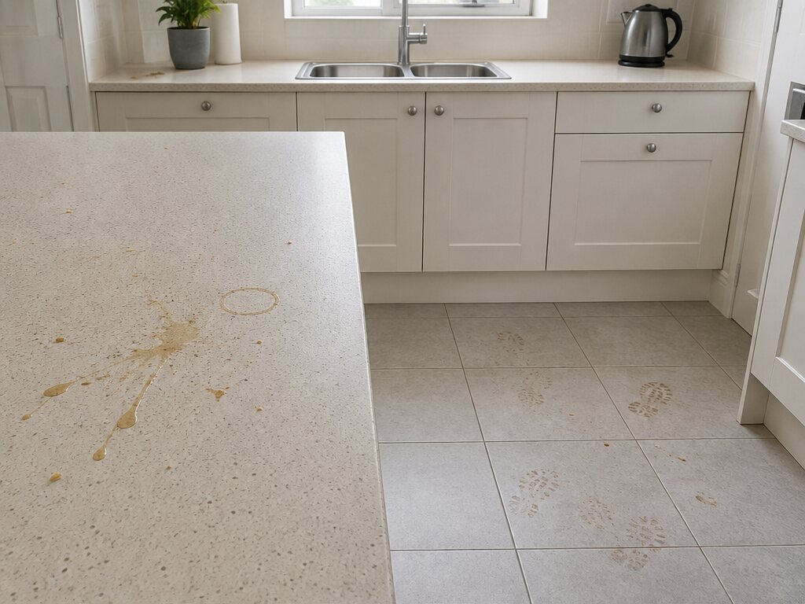
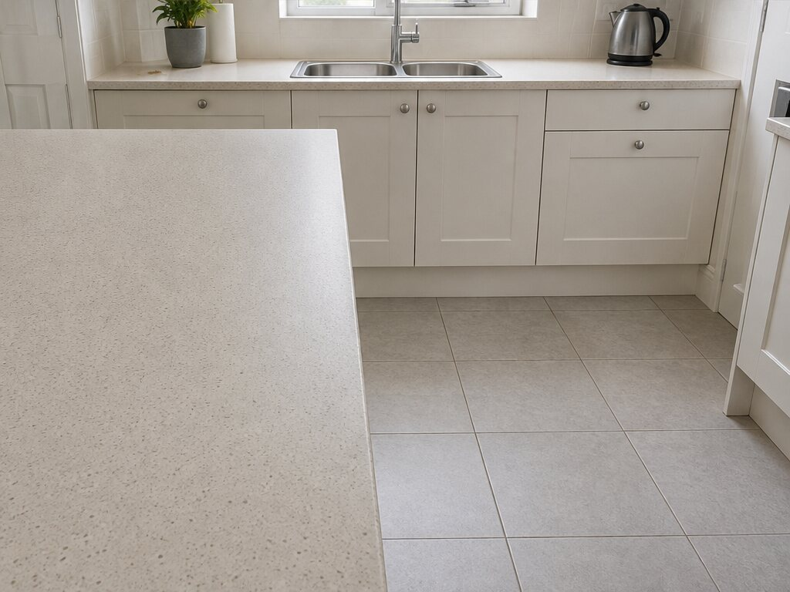
Floors & work surfaces
Floor cleaning and work surfaces wiped down, with polishing where it is useful.
Best for: shared living spaces and kitchen touch-ups.
Ask about this service →Choose the rooms and tasks that would make the biggest difference. We will talk through the visit with you before anything is arranged.
Priced per home, not per package.
Tell us what you need and you will have a figure before anything is booked.
Drag the comparison handles to explore the everyday services. Images are illustrative; view image sources.
Choose the practical tasks you would like covered, from shared surfaces to beds and bathrooms.


Floor cleaning and work surfaces wiped down, with polishing where it is useful.
Best for: shared living spaces and kitchen touch-ups.
Ask about this service →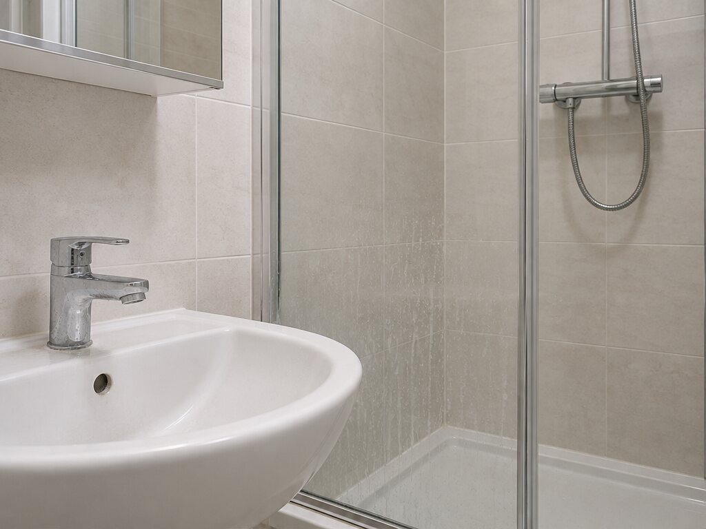
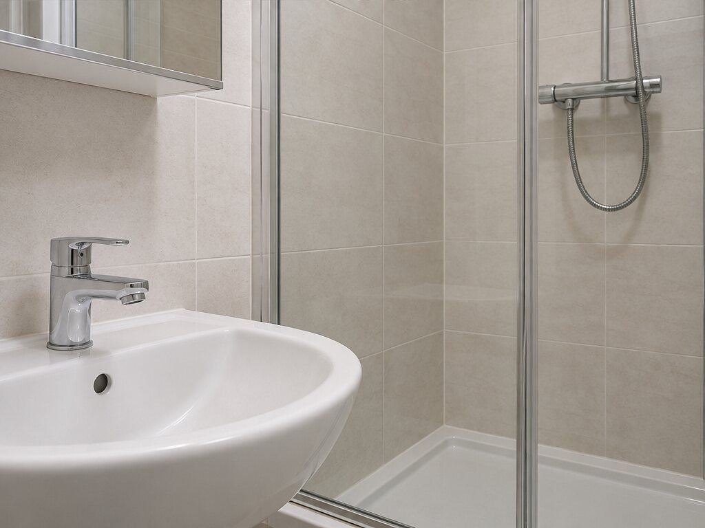
Bathrooms and shower rooms cleaned, including the surfaces and detail areas that need regular care.
Best for: keeping wash areas fresh between deeper cleans.
Ask about this service →

Making beds, smoothing the existing bedding and arranging pillows neatly. Bed stripping and linen changes are not included.
Best for: helping bedrooms feel reset and ready.
Ask about this service →Not sure where to start? Tell us what would make the biggest difference, and we will talk it through.
Get a quoteAsk about the jobs that matter most in your home. Any of these can be added to a visit.


Ovens can be included as a specific cleaning task when you ask for them.
Best for: an oven that needs focused attention.
Ask about this service →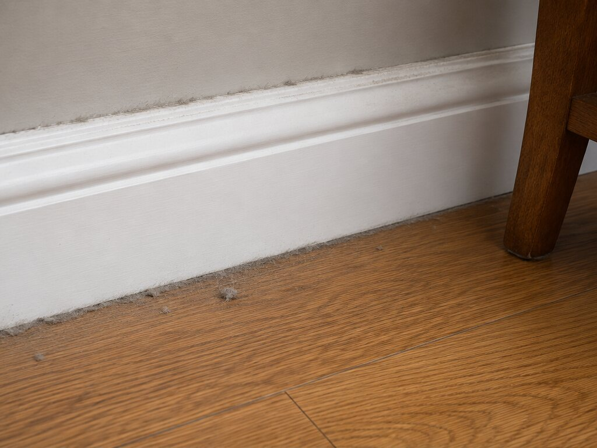
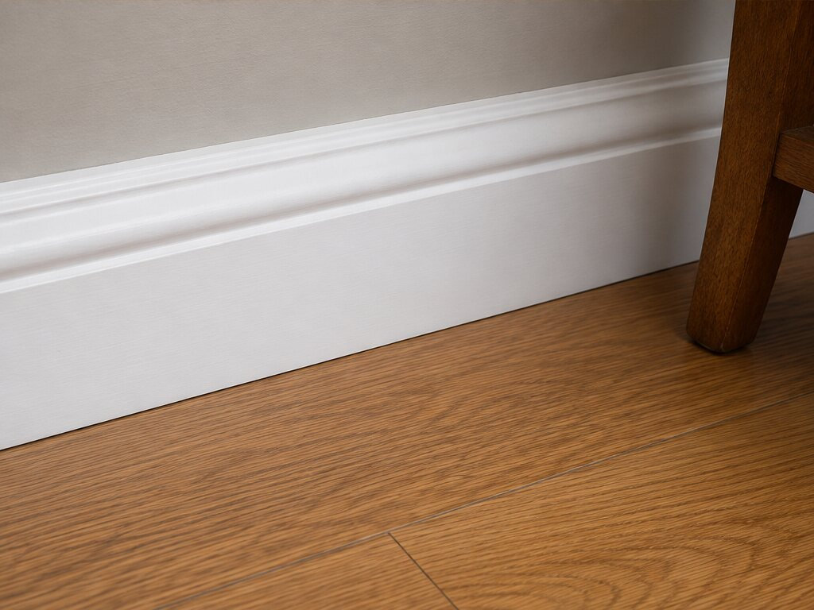
Floors polished and skirtings wiped down, for the surfaces that benefit from it.
Best for: edges and finishes that are easy to overlook.
Ask about this service →

Hoovering through the rooms you would like covered on the visit.
Best for: getting everyday floors ready for the week.
Ask about this service →Also on request, on any visit:
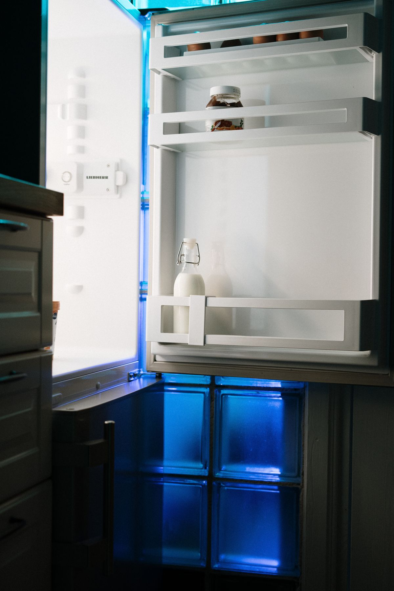
Fridge interiors and the inside of cupboards cleared down and wiped out, when you would like them included.
Best for: the insides that a routine visit does not reach.
Ask about this service →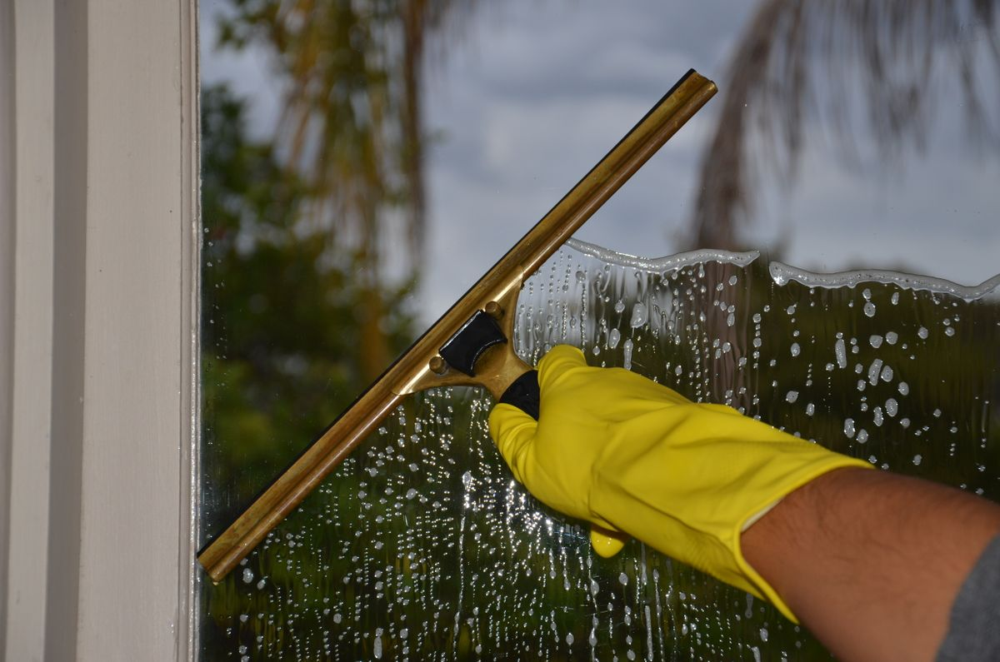
Windows cleaned on the inside, and on the outside where they can be reached safely from the ground.
Best for: letting the light back in after a dull stretch.
Ask about this service →Tell us about limescale around taps and screens or small surface mould patches so we can discuss suitable cleaning. Recurring or extensive mould needs its underlying damp problem assessed; routine cleaning does not resolve that cause.
Best for: a bathroom that needs more than a wipe-down.
Ask about this service →These are single jobs rather than a regular arrangement. Tell us what you are dealing with and we will talk through what it needs.
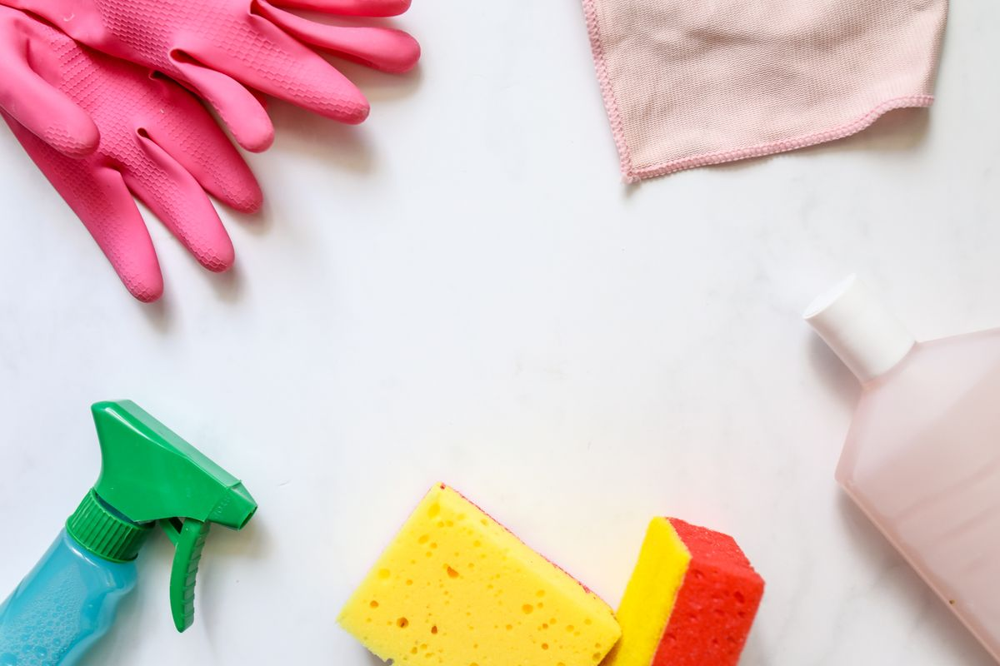
A longer single visit that goes further than a routine clean, into the places that get missed week to week.
Best for: a reset before guests, a season, or a fresh start.
Ask about this service →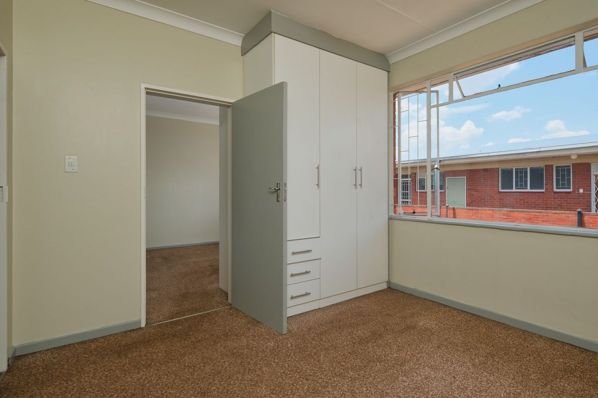
The clean before keys change hands — whether you are leaving a place behind or taking one on.
Best for: tenants, landlords and anyone mid-move.
Ask about this service →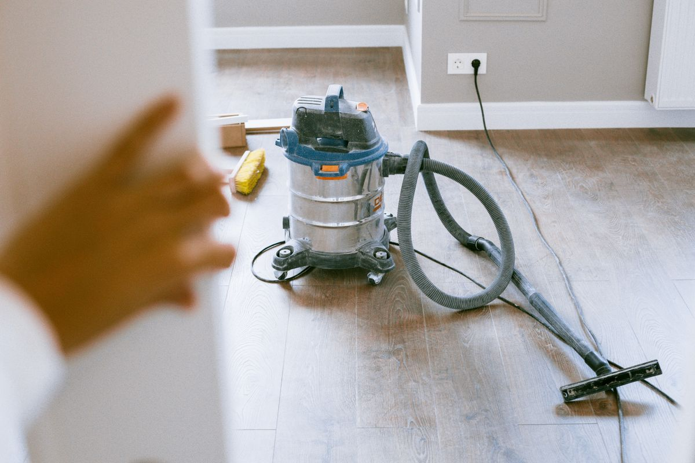
Cleaning settled dust and surfaces after building or decorating work. Please describe the work and any remaining debris so we can confirm what is suitable before quoting.
Best for: the day the tools finally leave.
Ask about this service →
Cleaning between guests, with bed making and presentation once fresh bedding is already in place. Stripping beds and changing linen must be arranged separately.
Best for: keeping a let ready without doing it yourself.
Ask about this service →Tell us about the rooms and what you would like looking after, and we can talk it through.